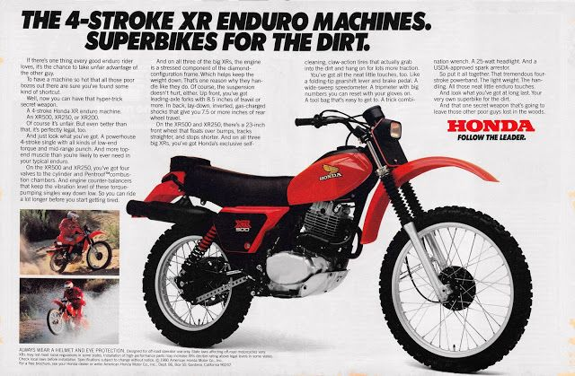

How it all began

Teenagers with raging hormones are easily impressed. Impressions are deep and lasting... Yes there was the cute blonde that my best friend dated, but there was also one day a large red and black motorbike overtaking me, on my Yamaha TY125, in a thunder that still resonates in my ears today.
It was like the headless horseman appearing through the fog, although I only saw the horse.
Deep and loud noise, speed, fear. It was on one wheel only, through traffic, had a mysterious black face and disappeared as fast as it had appeared, going through a red light. What out of hell was that??
It kept reappearing and disappearing over a few weeks, like Zorro, to get my buddies and I excited, it was the legend of the neighborhood. That was it, I wanted to be Zorro, tame the dark horse, ride on one wheel, defy the law and get the eternal admiration of my buddies (and their girlfriends!).
The XR500 had left in my soul a print that would never subside.
This was early 1979 in Nice, France. The XR500 was not for legal road use at the time and only a handful of them were available from the local dealer, Wherther Honda. I was too young to get a licence for a 500cc anyway and money was scarce. Way out of reach for me. Only in my dreams. And dreams there were...
Well, I got myself the nearest affordable ersatz: a stock (blue!) Honda XL125S. Over a few months I transformed this poor bike into a mini version of the XR500. The big problem I encountered was the headlight and its shroud. It was not available as a spare part from Honda.
Then Honda produced and sold the XR125 which simply looked horrible and reinforced my desire to have the only "real" XR125 in the world.
I tried to manufacture a headlight and shroud, with resin, a glass headlight from a SWM, I lost sleep over this. I even went as far as convincing my godfather who lived in New York at the time to get one for me from the Honda dealer there. And one day.... it was there, the art piece was complete... errhhh, ah well, teenagers :)